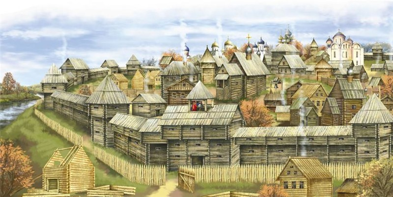
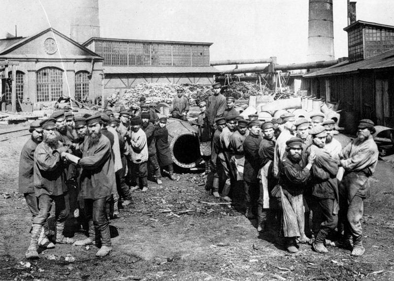
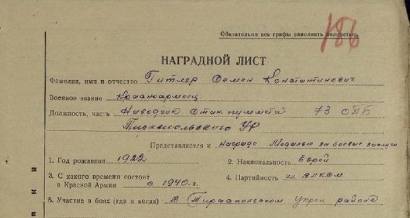
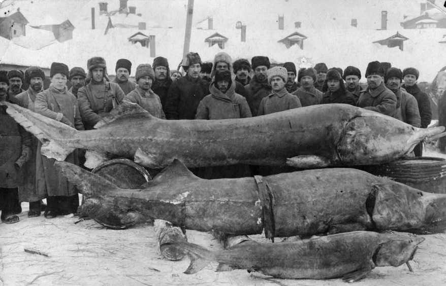
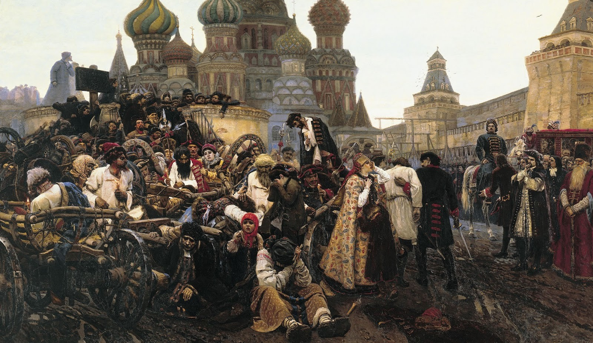
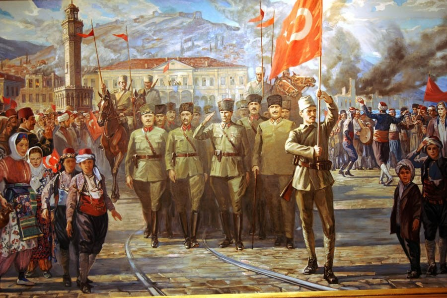
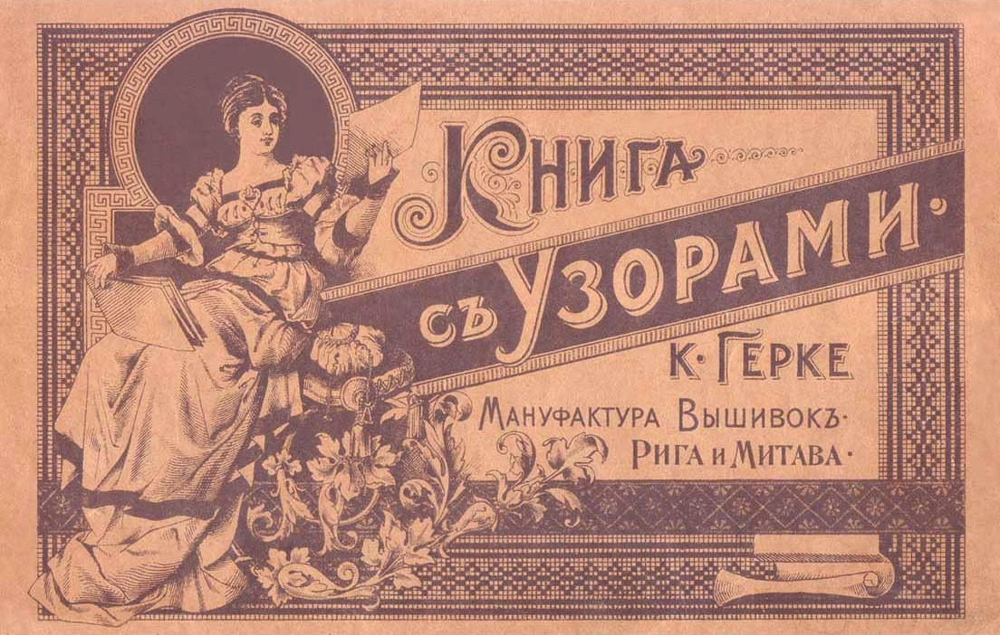
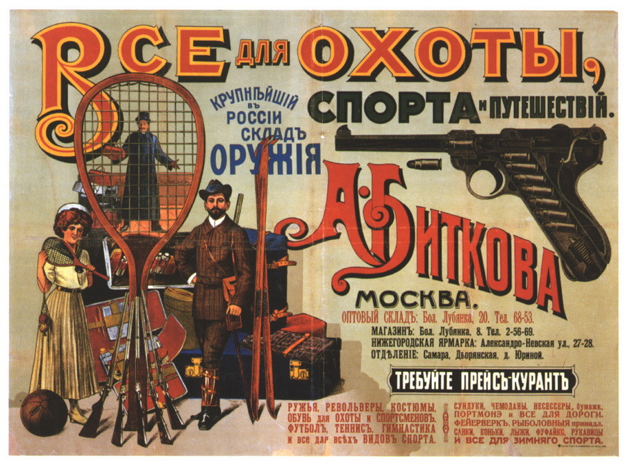
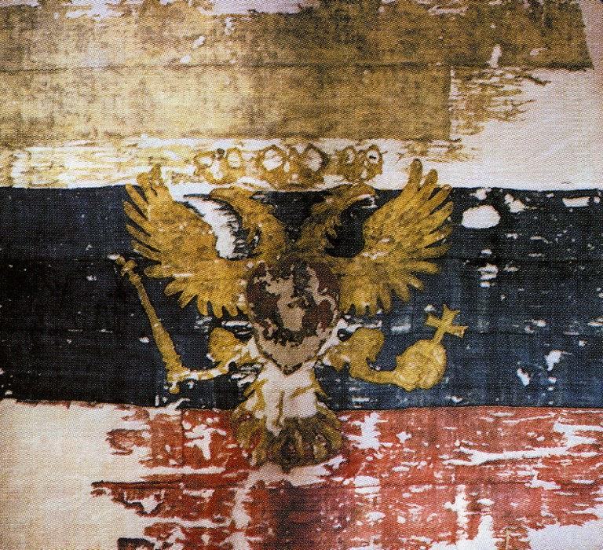

Удивительные факты из истории России, которые многим неизвестны
В истории Российского государства было всё: взлёты, падения, времена застоя и расцвета, горькие поражения и великие победы. Предлагаем вам несколько интересных фактов из истории России, которые известны далеко не всем.
Первая столица славян — город Словенск, был основан в 2409 г. до нашей эры

Так говорится в тексте под названием «Сказание о Словене и Русе и городе Словенске». В этом сказании предками русского народа называют князей Словена и Руса — потомков князя Скифа. По преданию, в 3099 году от сотворения мира (2409 год до н. э.) Словен и Рус со своими родами начали уходить в поисках новых земель с берегов Чёрного моря и через 14 лет вышли на берега озера Мойско (Ильмень), где Словеном был основан город Словенск (современный Великий Новгород), а Русом — город Руса (современная Старая Русса).
Дореволюционная Россия была самой непьющей страной в Европе

На протяжении трёх столетий с XVII до начала XX века Россия была одной из самых трезвых стран в Европе. В отдельные периоды времени потребление алкоголя на душу населения меньше чем в России было только в Норвегии.
9 сентября 1941 года Гитлер был награждён командованием Советского Союза медалью «За Отвагу»

Да-да, вы не ослышались. Награду получил красноармеец-пулемётчик Семён Константинович Гитлер, еврей по национальности. В наградном листе было написано: «Будучи наводчиком станкового пулемета, поддерживал огнем наступление своего взвода. Оказавшись в окружении и получив ранение, товарищ Гитлер вел огонь, пока не израсходовал боеприпасы, после чего, не бросив оружия, выбрался к своим, в общей сложности уничтожив более сотни военнослужащих Вермахта».
Самая дорогая рыба в истории была выловлена в России

В 1924-м году в реке Тихая Сосна была поймана рыба белуга, вес которой составил 1227 килограммов. В её брюхе находилось 245 кг чёрной икры. Этот случай занесен в Книгу рекордов Гиннеса, как факт добычи самой дорогой рыбы в мире. В наше время стоимость этой икры составила бы 290 тыс. долларов.
Пётр Первый лично пытал и убивал людей

То, что Пётр ещё с самого раннего детства испытывал мягко говоря неприязнь к стрельцам известно всем. Именно их кровавые бунты на несколько лет посеяли в стране смуту. Не удивительно, что придя к власти, Пётр лично руководил расправой над стрельцами. Помогая известным московским палачам Алёшке и Терёшке, Пётр лично пытал бунтовщиков, а пятерым даже собственноручно отрубил головы.
Сокол на Руси был одним из самых ценных подарков
Соколиная охота на Руси известна ещё с IX века. Но расцвет её пришёлся на время правления царя Алексея Михайловича по прозвищу «Тишайший». Впрочем, уже во времена Золотой Орды соколами нередко выплачивалась дань татарам. Один белый кречет тогда приравнивался по стоимости к трём чистокровным скакунам.
Турции как государства сейчас вообще могло бы не существовать

В самом конце Великой Отечественной войны Советский Союз предъявил к Турции территориальные претензии, планируя наказать это государство за сотрудничество с фашистской Германией. При этом создание Турецкой Союзной Социалистической Республики руководством даже не рассматривалось. По плану оккупированные земли Турции просто должны были разделить между Грузинской ССР и Армянской ССР. Но США и Великобритания высказались резко против такого развития событий и в 1953 году, сразу после смерти Сталина, руководство СССР заявило о своём отказе от территориальных претензий.
Буква «Еръ», нынешний твёрдый знак — самая дорогая буква алфавита

До реформы 1917–1918 годов эта буква писалась на конце каждого слова после согласных. При этом она была «немой» буквой, то есть не читалась, и, соответсвенно, совершенно никак не влияла ни на смысл, ни на орфографию. Вот только на бумаге «еръ» занимала до 8% места и времени при печати. Российской казне одна только эта буква стоила более 400 000 рублей в год.
Свободная продажа оружия

До революции 1917 года оружие в Российской империи продавалось совершенно свободно, без всяких справок и лицензий. Абсолютно любой человек мог прийти в охотничий магазин и купить себе огнестрельное или холодное оружие.
До XVII века у Русского государства не было официального флага

Свой нынешний вид российский флаг приобрёл во времена правления Петра Первого. До этого использовался флаг единого образца, установленный при строительстве первого русского военного корабля. Правда как он выглядел до сих пор неизвестно. Ещё раньше в качестве флагов использовались различные военные стяги и церковные хоругви.